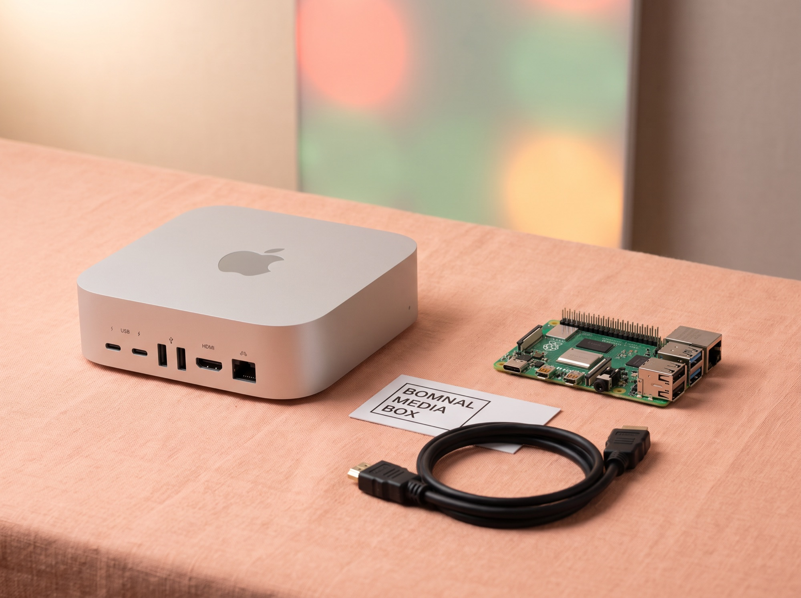
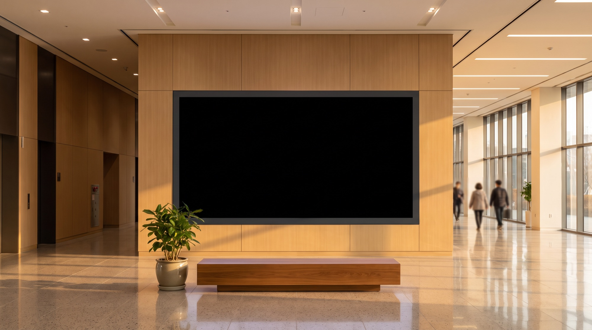

맑은 하늘빛과 넓은 흐름
입자가 거의 없고 빛무리가 크게 번집니다. 멀리서도 "오늘 나가도 되겠다"가 바로 읽힙니다.
대구의 하늘을 읽는 중
맥미니·라즈베리파이 기반 미디어아트 하드웨어와 AI 콘텐츠 SaaS를 공급합니다. 공공기관이 원하는 디자인과 보유한 DB를 그대로 미디어아트로 만들어 LED 패널에 송출합니다.
대구의 오늘 날씨와 현재 시각이 시침·초침·꽃잎의 궤도를 바꿉니다.
Live on Screen · Daegu Air Quality
아래 대형 LED 패널은 봄날 미디어박스가 실제로 송출하는 화면입니다. 대구 공기질(PM2.5·PM10) 공공 API를 실시간으로 읽어, 수치를 읽지 않아도 색과 입자의 밀도만 보고 오늘 공기가 어떤지 알 수 있게 추상적으로 표현합니다.
입자가 거의 없고 빛무리가 크게 번집니다. 멀리서도 "오늘 나가도 되겠다"가 바로 읽힙니다.
따뜻한 베이지 톤에 입자가 천천히 떠다닙니다. 평소대로 활동해도 되는 상태입니다.
입자 밀도가 급격히 늘고 흐름이 흐트러집니다. 민감군 주의 신호를 색으로 전달합니다.
화면 전체가 어두워지고 입자가 위로 무겁게 떠오릅니다. 외출 자제 신호를 즉시 인지시킵니다.
Hardware + AI SaaS · Public Signage Supplier
지금까지 관공서·문화재단 LED 사이니지는 회당 영상 외주 비용이 크고 갱신이 어려워 같은 화면이 반복 재생되어 왔습니다. 오늘은 봄날은 맥미니·라즈베리파이 기반 봄날 미디어박스와 5단계 멀티에이전트 AI 파이프라인 콘텐츠 SaaS, 원격 관제 서버를 한 계약으로 묶어 공급합니다. 공공기관이 원하는 디자인과 보유한 DB를 그대로 입력받아, 기관 고유의 데이터가 살아 움직이는 미디어아트로 화면에 올립니다. 대구 북구청 사이니지 미디어아트 3편 납품과 publicbloom.art 라이브 시연으로 검증된 구조입니다.

Media Art Hardware · Mac Mini & Raspberry Pi
공공청사·문화재단·도서관·복지관의 LED 사이니지·미디어월·정보게시대에 맞춰 사전 세팅된 상태로 납품합니다. 관제 서버 연동, 자동 리부트·헬스체크, 공공 API 실시간 연결까지 개봉 후 케이블 3개만 연결하면 운영이 시작됩니다. 발주처가 이미 쓰는 디자인 가이드와 내부 DB를 그대로 받아 화면 콘텐츠로 만들어 드립니다.

맥미니와 라즈베리파이를 미디어아트 상시 재생에 맞춰 튜닝한 전용 셋톱박스입니다. HTML5 Canvas 기반 자체 엔진 spring.js(78KB)와 공공데이터 API가 사전 셋업된 상태로 납품되며, 발주처가 원하는 디자인 가이드와 보유 DB를 그대로 반영해 화면을 구성합니다.
Apple Silicon M4 기반. 로비 미디어월·정보게시대·복도 사이니지 상시 운영에 가장 많이 나가는 표준 사양입니다.
라즈베리파이 5 기반. 키오스크·소형 패널·행사 임시 설치용으로, 다수 대량 배치 시 원가를 크게 낮춥니다.
대형 4K 미디어파사드·야외 LED·다중 화면 동기화처럼 연산 부하가 큰 현장을 위한 상위 사양입니다.
여러 대의 미디어박스를 한 화면에서 상태 확인·콘텐츠 배포·리포트 다운로드까지 관리합니다. 실측 사양 산정과 AS 이력까지 같은 도구에서 처리합니다.
관제 프로그램 열기기관 CI·컬러 가이드·기존 홍보물 톤을 입력받아 화면 스타일을 맞추고, 내부에 이미 쌓여 있는 데이터(민원 처리 현황, 방문자 수, 프로그램 참여자, 에너지 사용량, 지역 환경 측정값 등)를 화면의 움직임으로 바꿉니다. 새로 데이터를 만들 필요 없이, 기관이 가진 것을 그대로 보여주는 방식입니다.
기관 CI·컬러·서체·금기 표현을 받아 RAG에 임베딩합니다.
공공 API·엑셀·내부 DB 중 가능한 방식으로 데이터를 연결합니다.
AI 파이프라인이 기관 톤에 맞춘 화면 시안을 1일 이내 출력합니다.
확정 시안을 코드로 변환해 현장 미디어박스에 원격 배포합니다.
Turnkey Service · Survey to Remote AS
LED 시공업체·콘텐츠 외주·유지보수 업체를 따로 찾을 필요 없이, 현장 실측 한 번으로 설치·콘텐츠·운영까지 한 계약으로 끝냅니다. 발주처 담당자는 창구 하나만 관리하면 됩니다.
설치 공간을 직접 방문해 벽면 폭·높이, 시야 거리, 조도, 전기·네트워크 인출 위치를 실측하고 도면화합니다. 실측 결과에 따라 최적 패널 크기와 픽셀 피치를 산정합니다.
실측 사양에 맞춘 LED 패널·미디어월을 공급하고 시공합니다. 구조 보강, 프레임 제작, 배선 정리, 전원 계통까지 시공 범위에 포함됩니다.
봄날 미디어박스(맥미니 M4 / 라즈베리파이 5)를 패널 뒤에 설치하고, 관제 서버 연결·자동 시작·자동 리부트·헬스체크까지 세팅을 완료한 상태로 인계합니다.
기관 CI·컬러 가이드와 보유 DB(민원 처리 현황, 방문자 수, 프로그램 참여자, 에너지 사용량, 환경 측정값 등)를 연결해 기관 전용 미디어아트를 제작합니다. AI 파이프라인으로 시안 3종을 1일 이내 제시합니다.
관제 서버가 전국 설치 화면의 상태를 상시 감시합니다. 화면 정지·네트워크 단절·데이터 오류를 자동 감지해 원격으로 복구하고, 월간 운영 리포트를 자동 발행합니다.
5-Stage Multi-Agent AI Pipeline
Claude Sonnet · Claude Opus · GPT-4o · Midjourney · 자체 엔진 spring.js를 하나의 5단계 파이프라인으로 묶어, 1건 제작 리드타임을 영상 외주 5일 → AI 코드 콘텐츠 1일 이내로 단축합니다. 발주처별 톤·금기어·디자인 가이드는 RAG 벡터DB에 임베딩되어 매번 자동으로 반영됩니다.
Claude Sonnet + RAG 벡터DB
발주처 키워드·일정·규정을 읽고 콘텐츠 컨셉과 구조도를 출력합니다.
Claude / GPT-4o + 프롬프트 라이브러리
기획안 + 톤·금기어 규정을 반영해 본문·CTA·자막 카피를 생성합니다.
GPT Image + Midjourney + 스타일 프리셋
카피와 컬러 가이드를 입력해 사이니지용 키비주얼 3종을 출력합니다.
Claude Opus + 자체 엔진 spring.js
시안·송출 규격을 HTML5 Canvas 코드로 변환해 미디어박스에 배포합니다.
Claude + 자동 운영 리포트
관제 서버로 자동 배포하고 노출 시간·데이터 변화·접속 통계 리포트를 자동 생성합니다.
Anthropic API 이용료 · OpenAI/Midjourney API 이용료 · RAG 벡터DB 구축·연계 이용료를 봄날이 통합 정산하므로, 발주처는 별도의 AI 계정·라이선스 관리 없이 결과물만 받아봅니다.
Annual Integrated Package
발주처 담당자의 계약·구매·유지 협의를 하나로 단일화합니다. 자사 GitHub + AI 자율 유지 재생 플레이어로 유지 원가를 최소화한 SaaS 정기구독 모델입니다.
발주처 다수 대수 계약 시 하드웨어·SaaS 단가 별도 협의. 관공서·문화재단 회계연도 기준 견적서·직접생산확인증명서 발행 가능.
대경권 관공서·문화재단 파일럿
2,100만원대경권 확산 · SaaS 갱신 안정화
10,500만원동남권·수도권 진입
35,000만원Regional Rollout Area
대구·경북 관공서·문화재단 시범 계약을 우선 진행하고, 2027년 대경권 확산, 2028년 광역 진입을 계획합니다. 지역별 공공데이터(경주 관광·야간관광, 안동 하천·전통문화, 부산 야간경관 등)를 결합한 지역형 콘텐츠 SaaS로 대응합니다.
대구 북구청 사이니지 미디어아트 3편 납품 기반. 대경권 관공서·문화재단 파일럿 3건 우선 진행.
경주·안동 지역 데이터를 결합한 지역형 미디어박스와 축제 파사드 콘텐츠 SaaS.
야간경관·미디어월·사이니지 송출용 4K 미디어박스와 자동 콘텐츠 갱신 SaaS.
문화재단·복지관·도서관 대상 광역 확산. 관제 서버 기반 1인 운영 체계로 대응.
Media Art Works
공공데이터를 빛, 꽃, 움직임으로 바꾸는 LED·사이니지·미디어월용 작품 예시입니다. 경북 경주와 안동처럼 지역 정체성이 강한 도시에는 관광·축제·하천 데이터를 결합한 별도 제안도 가능합니다.
경주 날씨, 일몰 시간, 강수확률, 야간관광 동선, QR 축제 참여 데이터를 별빛과 금빛 문양의 움직임으로 바꿉니다.
안동 풍속, 습도, 낙동강 수위, 공연 일정, 현장 설문 데이터를 한지 결, 물결, 탈춤 문양의 변화로 표현합니다.
| 작품 | 연결 데이터 | 시민에게 보여주는 판단 | 적용 공간 | 설치 장비 |
|---|---|---|---|---|
| 오늘은 봄날 | 대구 날씨, 바람, 구름, 강수 | 오늘의 하늘과 현재 시각을 시침, 초침, 꽃잎, 빛의 움직임으로 표현 | 공공청사 로비, 미디어월, 야외 LED | 현장 송출용 미니 PC 권장 |
| 빛의 산책로 | 대구 미세먼지 API, 초미세먼지 지수 | 아이들이 공원에서 야외활동을 해도 되는지 색과 신호로 안내 | 공원, 학교 앞, 어린이 체험 공간 | 미니 PC 권장, 네트워크 연결 필요 |
| 숨 쉬는 정원 | 오늘 온도, 체감온도, 시간대별 변화 | 따뜻함과 추위를 꽃의 크기, 색온도, 호흡 속도로 시각화 | 도서관, 병원, 복지관, 웰니스 공간 | 4K 장시간 운영은 미니 PC 권장 |
| 도시의 꽃비 | 강수 확률, 강수량, 기상 예보 | 오늘 비가 올지 안 올지를 꽃비의 밀도와 하늘 변화로 표현 | 축제 미디어파사드, 광장, 관광 안내 공간 | 미니 PC 송출, 프로젝션/LED 현장 테스트 권장 |
Data-driven Proposal Tabs
공공기관이 보유하거나 공개 API로 연결할 수 있는 데이터를 작품의 조건으로 사용합니다. 각 제안은 LED, 사이니지, 미디어월, 키오스크 화면에 맞춰 커스텀 제작 가능합니다.
기온, 강수확률, 풍속, 하늘 상태를 꽃잎의 속도와 빛의 온도로 바꿉니다. 로비나 관광안내소에서 오늘의 도시 분위기를 직관적으로 보여줄 수 있습니다.
미세먼지, 초미세먼지, 오존, 체감온도를 조합해 아이들이 밖에서 놀아도 되는지 색과 움직임으로 안내합니다. 엄마의 시선이 가장 잘 드러나는 제안입니다.
하천 수위, 강수량, 홍수주의 정보를 물결의 높이와 속도로 표현합니다. 안전 안내와 감성적 도시 경관을 함께 만들 수 있습니다.
버스 도착, 보행량, 혼잡도 데이터를 선과 점의 흐름으로 시각화합니다. 대기 공간에서 도시가 움직이는 감각을 보여주는 사이니지로 제안할 수 있습니다.
공공청사의 태양광 발전량, 전력 사용량, 탄소 절감량을 꽃의 개화와 빛의 밝기로 보여줍니다. ESG 캠페인과 함께 운영하기 좋습니다.
현장 QR 참여, 설문 응답, 스탬프 인증 데이터를 꽃의 개화 수와 빛의 밀도로 바꿉니다. 작품 감상과 참여 페이지를 하나로 연결합니다.
Company Profile
대구 여성기업 오늘은 봄날은 관공서 LED 사이니지용 미디어박스 하드웨어와 AI 콘텐츠 SaaS를 통합 공급합니다.
날씨, 미세먼지, 안전한 외출처럼 매일 확인하는 생활의 감각을 공공 데이터와 연결합니다. 시민이 이해하기 쉬운 화면, 담당자가 운영하기 쉬운 구조, 결과 보고까지 고려한 콘텐츠를 만듭니다.
날씨, 미세먼지, 교통, 수위, 행사 참여 데이터 등 다양한 API 조건에 따라 화면 결과가 달라지는 콘텐츠를 제작합니다.
공공청사, 도서관, 축제장, 야외 LED, 실내 미디어월에 맞춰 화면 비율과 운영 환경을 설계합니다.
미디어박스가 자동 생성한 운영 리포트로 노출 시간·데이터 변화·접속 통계를 발주처에 제공합니다.
기획 의도, 장비 조건, 운영 방식, 결과 데이터 정리까지 공공사업 보고에 필요한 흐름을 준비합니다.
Contact
오늘은 봄날은 대구를 기반으로 맥미니·라즈베리파이 기반 미디어아트 하드웨어와 AI 콘텐츠 SaaS, 관제 서버를 통합 공급합니다.
Inquiry Form
기관명, 사업영역, 예산 범위만 남겨주시면 검토 후 연락드립니다.
Business Credentials
발급번호 제0113-2025-35456호 · 유효기간 2025.11.07 ~ 2028.11.06. 관공서 여성기업 우선구매 가능.
신고번호 제2025-000019호. 동영상 제작·홍보영상 제작·영상촬영 제작품목 신고 완료.
신고번호 제12235호. 방송영상물 제작 및 공급 업종으로 신고, 방송영상물 자체 제작 권한 보유.
발급번호 제2025-0495-02141호 · 유효기간 2025.10.29 ~ 2027.10.28. 중소기업 공공구매 직접생산 확인.
「황홀한 정원」·「끝없는 흐름」·「하늘의 속삭임」 3편 제작·납품 (data-media-art.html 공시).
오늘은 봄날(날씨)·빛의 산책로(미세먼지)·숨 쉬는 정원(온도)·도시의 꽃비(강수) 실시간 시연 중.